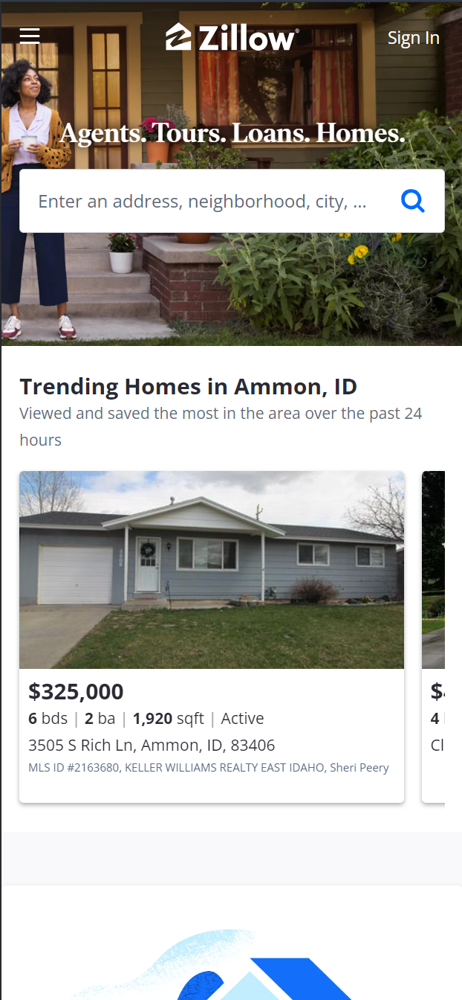

White Space and Clean Design
Church of Jesus Christ of Latter-Day Saints.org
This site shows multiple examples of good white space and clean design. The first thing that I noticed is that it just feels clean to me. The screen doesn't feel too busy. This is of course from folling good design practices. One factor that contributes to this site's clean design is it character spacing rules. We can see that the test doesn't ever look like it's too close together, nor too far apart. This is true even when looking at texts of differing font sizes. This is because the site holds has a clear spacing rule. When we open the dev tools, we can see the spacing system. Each spacing for each size font is a multiple of 8 and scales based on the size font used. This creates a clean pattern throughout the site.
Hick's Law
I didn't quite understand Hick's Law at first, but after some research, I think the the Vanguard
homepage shows good use of this feature. Hick's Law is about the choices that you present to the user.
It basically says that the more choices you give to a user, the longer it will take the user to decide
or be able to figure out what to do.
The list of links at the top of the site is what I feel gives a good example of designing according to
Hick's Law. Vanguard does quite a few things. They could very easily fill up a website with a lot of
info. This would be a problem though because it would overwhelm the user with options and information.
The purpose of this home page and these links, is to break up all the information they could give to the
user. When a user goes to this page, they can quickly look through these links and click on the one that
is most applicable to what they are looking for.
Fick's Law

Fick's law was also really confusing to me. I found a video that explained it pretty well though. Fick's
Law is about how fast or easily the user can use the website. The video showd a graphic of of a phone
screen and how easily it would be for a user to interact with different parts of the screen, assuming
the user was using only thier right hand. The most difficult parts for the user to reach were the top
and bottom right of the screen, and the easiest part of the screen to reach was the bottom left up
towards the mid right of the screen, with the rest being moderately more difficult to reach.
This site follows Fick's Law by putting the most important features in the most easy to reach areas. In
the prime reaching area is a feature that shows the user different houses in their area that may have
features that they are looking for. This area is perfect for allowing the user to slide thier thumb to
look at different houses. The next most important feature is in a the moderately difficult to reach
area. This feature allows the user to search for houses in the area of an address. In the most difficult
to reach spot we see features that may not be as commonly used, but are still placed within a hierarchy.
The hamburger menu is likely not used by most users and so it is placed in the top left of the screen,
the most difficult place to reach. The sign in feature is likely used more and is according placed in
the top right as it is easier to reach.